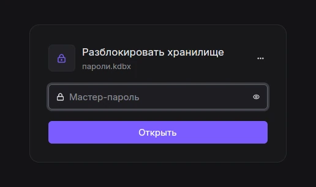
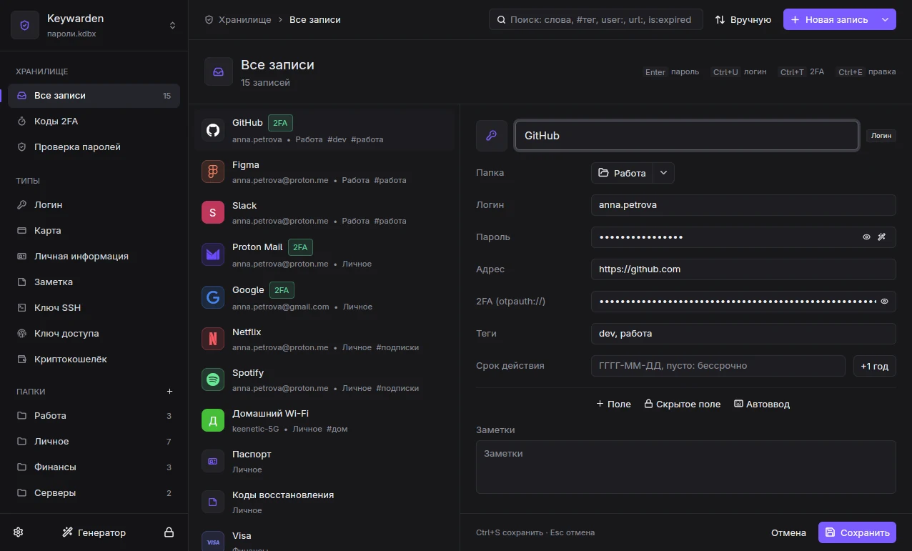

Документация
Всё, что нужно, чтобы установить Keywarden, перенести в него пароли и пользоваться им каждый день.
Обзор
Keywarden состоит из четырёх частей, которые ставятся вместе:
keywardend, демон. Он открывает файл.kdbx, держит его разблокированным в памяти, сохраняет изменения, сам блокируется, запускает SSH-агент и общается с браузером.keywarden-ui, главное окно. С флагом--launcherэто окно быстрого поиска, которое вызывается горячей клавишей.kw, клиент командной строки: поиск, копирование, добавление, 2FA, импорт, всё можно автоматизировать скриптами.keywarden-hostи расширение для браузера: расширение общается с хостом, а хост пересылает зашифрованные сообщения демону.
Все клиенты общаются с демоном через локальный сокет (Linux, macOS) или именованный канал (Windows). Демон принимает только процессы вашего пользователя. Если демон не запущен, окно запустит его само.
Установка
Скачайте архив для своей системы из последнего релиза. При желании сверьте его с SHA256SUMS.
tar xzf keywarden-*-linux-x86_64.tar.gz
cd keywarden-*-linux-x86_64
./install.shСкрипту не нужен root. Он кладёт бинарники в ~/.local/bin, ставит пользовательскую службу systemd для демона и запускает её, добавляет ярлык в меню и регистрирует хост браузера для Firefox. Браузерам на основе Chromium нужен id расширения, см. Расширение для браузера.
Необязательные пакеты: wtype (автоввод на Wayland) или xdotool (автоввод на X11).
Распакуйте keywarden-*-windows-x86_64.zip в постоянную папку, например %LOCALAPPDATA%\Programs\Keywarden, и запустите keywarden-ui.exe. Демон стартует по требованию.
Бинарники пока не подписаны, поэтому SmartScreen один раз переспросит: выберите «Подробнее», затем «Выполнить в любом случае».
Зарегистрируйте хост браузера из этой папки:
.\kw.exe browser-setuptar xzf keywarden-*-macos-arm64.tar.gz
cd keywarden-*-macos-arm64
xattr -dr com.apple.quarantine .
./keywarden-uiСборки для Apple Silicon пока не нотаризованы, отсюда шаг с xattr. Затем зарегистрируйте хост браузера командой ./kw browser-setup.
Из исходников
Нужен Rust 1.92 или новее. На Linux также нужны библиотеки для GPUI (libxkbcommon, wayland, vulkan, fontconfig).
git clone https://github.com/onokashino/keywarden
cd keywarden
cargo build --release -p keywarden-daemon -p keywarden-cli -p keywarden-host -p keywarden-uiОбновления
Каналы пакетов заработают с первым релизом.
- Arch Linux:
paru -S keywarden-bin(AUR), обновляется вместе с системой. - macOS:
brew install onokashino/tap/keywarden, дальшеbrew upgrade. Снимать карантин не нужно. - Windows:
winget install onokashino.Keywarden, дальшеwinget upgrade. - На любой системе: включите «Настройки», «Этот компьютер», «Обновления». Раз в сутки Keywarden спросит у GitHub последний релиз (больше ничего не отправляется) и сообщит о новой версии. По умолчанию выключено.
Расширение из магазина обновляется само.
Первая база
Запустите keywarden-ui. На первом экране два пути:
- Открыть существующий
.kdbxиз KeePassXC, KeePassDX, KeePassium или KeePass. Ничего не конвертируется: файл по-прежнему читается этими приложениями. - Создать новую базу: выберите место (синхронизируемая папка подойдёт хорошо), задайте мастер-пароль, при желании добавьте ключевой файл или YubiKey.
То же самое из терминала:
kw new ~/Sync/passwords.kdbx # создать
kw unlock --db ~/Sync/passwords.kdbx # открыть; путь запомнитсяПереходите с другого менеджера? См. Импорт: Bitwarden, 1Password, Proton Pass, Chrome, Firefox и другие.
Разблокировка

Базу можно защитить мастер-паролем, ключевым файлом, YubiKey (HMAC challenge-response, те же слоты, что в KeePassXC) или любым их сочетанием. Всё это задаётся в Настройки, «Безопасность», там же их можно поменять позже. Ключевые файлы создаются в формате KeePassXC.
База блокируется сама после периода бездействия, при блокировке экрана и перед сном компьютера. Заблокировать вручную: Ctrl+L в окне или kw lock.
Главное окно

На боковой панели разделы хранилища («Все записи», «Коды 2FA», «Проверка паролей», «Корзина»), типы, папки и теги. Перетащите записи на папку или тег, чтобы переместить их или пометить тегом; «+» рядом с папками и тегами создаёт новую папку или тег.
Типы записей: «Логин», «Карта», «Личная информация», «Заметка», «Ключ SSH», «Ключ доступа» и «Криптокошелёк». Каждый тип показывает свои поля, но внутри это обычная запись KeePass, так что другие приложения KeePass видят все поля. К любой записи можно добавить свои поля, скрытые поля, вложения и срок действия; каждое изменение попадает в историю записи, и любую старую версию можно восстановить.

Поиск
Строка поиска понимает небольшой язык запросов. Слова нечётко сопоставляются с названием, логином, URL и тегами.
| Запрос | Находит |
|---|---|
github | записи, где где-либо встречается «github» |
#work или tag:work | записи с этим тегом |
user:octo url:gitlab title:bank notes:pin group:Finance | совпадение в одном поле |
pass:1234 | записи, пароль которых содержит этот текст |
is:expired is:otp | просроченные записи, записи с 2FA |
-old | исключает записи, подходящие под «old» |
"exact phrase" /regex/ | точная фраза, регулярное выражение |
Горячие клавиши
| Клавиши | Действие |
|---|---|
| Ctrl+F | поиск |
| Ctrl+N | новая запись |
| Ctrl+E · Ctrl+S · Esc | изменить · сохранить · отменить |
| Ctrl+D · Shift+Del | дублировать · удалить |
| Ctrl+Shift+C · Ctrl+U · Ctrl+T | копировать пароль · логин · код 2FA |
| Ctrl+J / Ctrl+K | следующая / предыдущая запись |
| Alt+↑ / Alt+↓ | предыдущий / следующий раздел боковой панели |
| Ctrl+G | генератор паролей |
| Ctrl+Tab | следующая открытая база |
| Ctrl+, | настройки (Alt+1..Alt+6 переключают вкладки) |
| Ctrl+L | заблокировать |
Лаунчер

Лаунчер - это строка поиска поверх всех окон. Наберите пару букв, затем:
- Enter копирует пароль, Ctrl+U логин, Ctrl+T код 2FA;
- Esc закрывает лаунчер. Если база заблокирована, лаунчер сначала спросит мастер-пароль.
Скопированное значение скрыто от истории буфера обмена и облачного буфера и очищается через 30 секунд, но только если оно всё ещё в буфере. Если открыто несколько баз, лаунчер ищет по всем.
Назначение горячей клавиши
Лаунчер запускается командой keywarden-ui --launcher. Назначьте её на клавишу в своей системе:
Скопируйте dist/niri/keywarden.kdl рядом с конфигом niri и добавьте include "keywarden.kdl". Там назначено:
Mod+Shift+P { spawn "keywarden-ui" "--launcher"; } // лаунчер
Mod+Shift+A { spawn "kw" "autotype"; } // автоввод
Mod+Shift+Alt+L { spawn "kw" "lock"; } // блокировкаGNOME: «Параметры», «Клавиатура», «Просмотр и настройка комбинаций клавиш», «Пользовательские комбинации», добавьте keywarden-ui --launcher.
KDE Plasma: «Параметры системы», «Комбинации клавиш», «Добавить», «Команда или сценарий».
Sway: bindsym $mod+Shift+p exec keywarden-ui --launcher
Создайте ярлык keywarden-ui.exe на рабочем столе или в меню «Пуск», откройте его свойства, укажите объект keywarden-ui.exe --launcher и выберите клавишу в поле «Быстрый вызов», например Ctrl+Alt+K.
В приложении «Команды» создайте команду с действием «Запуск скрипта оболочки» /path/to/keywarden-ui --launcher, затем назначьте ей сочетание клавиш в её свойствах.
В настройках на вкладке «Этот компьютер» есть точные инструкции для вашей системы.
Расширение для браузера
Расширение заполняет логины, предлагает выбрать аккаунт, если их несколько, подставляет коды 2FA, предлагает сохранить новые и изменённые пароли и подсказывает сгенерированный пароль в формах регистрации. Невидимые поля и фреймы оно никогда не заполняет.
Установка
- Установите расширение. Пока его нет в магазинах, используйте zip из релиза: в браузерах на основе Chromium откройте
chrome://extensions, включите режим разработчика и загрузите распакованную папку; в Firefox откройтеabout:debuggingи загрузите его как временное дополнение. - Зарегистрируйте хост, чтобы браузер мог достучаться до Keywarden. Установщик на Linux делает это сам; в остальных случаях выполните
kw browser-setup. Для браузеров на основе Chromium передайте id расширения со страницыchrome://extensions:kw browser-setup --chrome-id <id>. - Нажмите значок Keywarden на панели браузера и кнопку «Подключить». Подтвердите в окне Keywarden.
Подтверждения

Когда сайт впервые запрашивает логин, Keywarden показывает подтверждение поверх всех окон: Enter разрешает один раз, Ctrl+Enter всегда для этого сайта, Esc отказывает. Сайты сопоставляются по регистрируемому домену с помощью Public Suffix List, поэтому у login.example.com и example.com общие логины, а у example.co.uk и other.co.uk нет.
Браузер и Keywarden общаются по зашифрованному каналу (та же схема crypto_box, что в KeePassXC-Browser); хост между ними лишь пересылает непрозрачные сообщения. Любое автоматическое поведение можно отключить в настройках расширения.
Горячая клавиша в браузере: Ctrl+Shift+L заполняет логин на текущей странице.
Ключи доступа
Когда сайт предлагает создать ключ доступа (passkey), расширение перехватывает запрос и сохраняет ключ в вашей базе в формате KeePassXC (поля KPEX_PASSKEY_*), так что KeePassXC может пользоваться теми же ключами. Вход по ключу доступа требует подтверждения, как и любой другой вход. Ключи используют ES256, которого требует почти любой сайт; в остальных случаях работает встроенный WebAuthn браузера.
Коды 2FA

Раздел «Коды 2FA» работает как приложение-аутентификатор: живые коды с обратным отсчётом, следующий код ближе к концу периода, копирование щелчком.
- Код можно добавить из секрета, ссылки
otpauth://, QR в буфере обмена или картинки с QR. Сделайте скриншот QR сочетанием Win+Shift+S в Windows или Cmd+Ctrl+Shift+4 в macOS, затем добавьте его из буфера. - Покажите QR, чтобы перенести код на телефон.
- Импорт и экспорт резервных копий
.2fas(незашифрованных). - Поддерживаются коды Steam Guard и старые поля KeePass
TOTP Seed.
kw totp github -c # скопировать текущий код
kw otp qr github # показать QR в терминалеАвтоввод
Автоввод печатает в активное окно: по умолчанию логин, Tab, пароль, Enter. У записи может быть своя последовательность в синтаксисе KeePass, например {USERNAME}{TAB}{TAB}{PASSWORD}{ENTER}, и привязки к окнам, которые выбирают нужную запись по заголовку окна. Перед вводом Keywarden проверяет, что окно в фокусе не сменилось.
kw autotype # запись для активного окна
kw autotype github # конкретная запись| Система | Чем печатает |
|---|---|
| niri | wtype, активное окно сообщает niri |
| Sway, другие wlroots | wtype; запись выбирается в лаунчере |
| X11 | xdotool |
| GNOME на Wayland | невозможно: GNOME не позволяет приложениям печатать в чужие окна |
| Windows | SendInput |
| macOS | нужно разрешение «Универсальный доступ», а для чтения заголовков окон ещё и «Запись экрана» |
SSH-агент
Keywarden работает как SSH-агент: ключи лежат в записях типа «Ключ SSH», агент отдаёт их, пока база открыта, и забывает при блокировке. Приватный ключ на диск не попадает. Всё собрано на вкладке «Настройки», «SSH»: сверху состояние агента и кнопка «Подключить ко всем программам», ниже ключи, что ещё лежат на диске, серверы из ~/.ssh/config и поведение. Каждая часть выключается там же.
Как завести ключ
- Создать: «Новая запись», «Ключ SSH», вкладка «Создать». Алгоритм: Ed25519 (рекомендуется), ECDSA P-256 или RSA 4096 для старых серверов. Получится ключ и его открытый ключ с кнопками «Скопировать», «Добавить на GitHub» и «GitLab». Из терминала:
kw ssh-generate --title GitHub --host github.com(-t ecdsa,-t rsa). - Добавить существующий: вкладка «Добавить существующий» показывает ключи из
~/.ssh, которых ещё нет в базе, их можно выбрать щелчком. Можно выбрать файл или вставить текст ключа; для ключа с паролем появится поле пароля. Илиkw ssh-import ~/.ssh/id_ed25519 --host github.com. - Перенести всё из ~/.ssh: карточка «Ключи на диске» на вкладке SSH, кнопка «Перенести в базу…»: в окне отмечаете нужные ключи и решаете, удалить ли приватные файлы (
.pubостаются). Илиkw ssh-migrate --import [--delete].
Для всех программ
Нажмите «Подключить ко всем программам» (или kw ssh-setup): Keywarden пропишет SSH_AUTH_SOCK в окружение сессии, и после следующего входа агента увидят ssh, git, IDE и git-клиенты. В Linux это ~/.config/environment.d, в macOS LaunchAgent, в Windows пользовательская переменная. В настройках видно, работает ли это или переменную перехватил другой агент (например, gcr-ssh-agent в GNOME). В уже открытых терминалах:
# bash, zsh
eval "$(kw ssh-env)"
# fish
kw ssh-env | source
# PowerShell
kw ssh-env | Invoke-ExpressionСвой ключ для каждого сервера
Впишите сервер в поле «Хост» ключа (github.com, git@host, ssh://user@host:2222, несколько через запятую) и включите «Серверы в ssh» (kw ssh-setup --hosts). Keywarden ведёт ~/.ssh/keywarden/config с IdentitiesOnly yes для каждого хоста и подключает его к ~/.ssh/config одной строкой. ssh предлагает серверу ровно один ключ, а не перебирает все, и ошибка «Too many authentication failures» уходит.
Серверы SSH в базе: настройки едут на все компьютеры
Запись «Сервер SSH» хранит то, что обычно лежит в ~/.ssh/config: адрес (user@host:port), каким ключом из базы входить, ProxyJump, проброс портов (8080, 5432:db:5432), любые другие строки ssh_config через ; и последовательность port knocking. Записи синхронизируются вместе с базой, а при включённых «Серверах в ssh» Keywarden пишет из них блоки Host в ~/.ssh/keywarden/config, так что ssh prod, scp, rsync, git и IDE видят их как обычные хосты. Ваш ~/.ssh/config не меняется (кроме одной строки Include), и при одинаковом имени побеждает запись из базы.
Перенести то, что уже есть: карточка «Серверы из ~/.ssh/config» на вкладке SSH (в окне видно, какой хост в какую папку и с каким ключом попадёт, лишние снимаются галочкой) или kw ssh-import-config. Каждый Host без масок станет записью в папке «SSH», с теми же автопапками, что в kw ssh. IdentityFile, который уже есть в базе (сравнивается открытый ключ), заменяется ссылкой на запись; если ключа в базе нет, строка IdentityFile остаётся в «других строках». Перенесённые раньше хосты пропускаются.
Port knocking. Впишите порты в поле «Port knocking»: 7000 8000:udp 9000 (без :udp это tcp). Keywarden добавит в конфиг Match originalhost prod exec "kw knock prod": ssh сам вызовет стук перед соединением, и для scp и rsync тоже. Последовательность лежит в базе зашифрованной и в файлы не пишется; пока база заблокирована, стук не выполнится. kw knock prod можно вызвать и вручную, а kw ssh стучит сам, даже когда «Серверы в ssh» выключены.
База заблокирована
Если ssh нужен ключ, а база заблокирована, Keywarden покажет окно разблокировки; после ввода пароля git push продолжится сам.
Подтверждения
Ключ может спрашивать перед каждым использованием. Окно пишет, куда идёт вход, например «Вход на github.com ключом "GitHub"» (OpenSSH 8.9+), предупреждает, если запрос пришёл через проброс агента, и предлагает «Разрешить на 15 мин», чтобы серия git fetch не спрашивала каждый раз. Блокировка базы это разрешение отменяет.
Подпись коммитов git
Переключатель «Подписывать этим ключом коммиты и теги git» в записи ключа (или kw ssh-git-sign GitHub) настраивает git подписывать через агент; GitHub и GitLab показывают такие коммиты как Verified. Выключение убирает настройки обратно.
Выбор сервера в терминале: kw ssh
kw ssh открывает в терминале две панели: слева папки, справа хосты, внизу подробности выбранного (ключ, ProxyJump, команда). Папки базы берутся как есть, хосты из ~/.ssh/config раскладываются сами по общему началу имени (prod-api, prod-db попадут в «prod») или по домену. Приватные ключи kw ssh не читает. Клавиши: Enter войти в этом терминале, o открыть в новом окне, s sftp, f проброс порта, c скопировать команду, e и n изменить адрес или добавить его ключу из базы, / поиск по всем папкам, ? все клавиши. kw ssh prod сразу подключится, если совпадение одно; kw ssh --list печатает список для скриптов. Если база заблокирована, kw ssh спросит мастер-пароль.
Keywarden SSH / поиск
╭ Папки ───────────────────╮╭ prod ───────────────────────────────╮
│◆ Все хосты 9 ││› prod-api deploy@10.0.1.5 │
│• Работа 2 ││ prod-db root@10.0.1.9:2222 │
│▾ ~/.ssh/config 7 ││ │
│ prod 2 ││ │
│ web 3 ││ │
╰──────────────────────────╯╰────────────────────────────────────╯
╭────────────────────────────────────────────────────────────────╮
│prod-api deploy@10.0.1.5 │
│ключ: id_work • через bastion │
│~/.ssh/config / prod, только чтение • ssh prod-api │
╰────────────────────────────────────────────────────────────────╯
Enter войти o в новом окне c команда / поиск ? все клавишиПодключение из лаунчера
Найдите в лаунчере ключ SSH с хостом и нажмите Enter: откроется терминал с ssh на этот сервер. Keywarden находит ghostty, kitty, foot, alacritty, WezTerm, GNOME Terminal, Konsole или xterm (в macOS Terminal, в Windows Windows Terminal); выбрать другой можно на вкладке SSH, строка «Терминал».
Поддерживаются ключи ed25519, ECDSA и RSA; записи хранят настройки KeeAgent, так что KeePassXC видит те же ключи.
Синхронизация

Keywarden синхронизируется через файлы. Положите базу в папку, которую синхронизирует Syncthing, Nextcloud, Dropbox или что угодно ещё, и откройте тот же файл на телефоне в KeePassDX (Android) или KeePassium (iOS).
Если файл меняется на диске, пока база открыта, Keywarden сливает изменения по записям: более новые правки побеждают, удаления учитываются, ничего не теряется молча. Конфликтные копии Syncthing сливаются и автоматически переносятся в резервные копии, а вы получаете уведомление. Если слияние удалило бы сразу много записей, Keywarden сначала спросит.
Импорт и экспорт
В Настройки, «Перенос» или из командной строки:
- Импорт: Bitwarden (JSON и CSV), 1Password, Proton Pass, CSV из Chrome, Firefox и KeePassXC, другой
.kdbxили старый.kdb, резервные копии 2FAS. В конце вы получите отчёт: что перенесено и что нужно проверить вручную. - Экспорт: CSV в формате KeePassXC, копия базы с другим паролем, резервная копия кодов
.2fas. - Слияние с другой копией той же базы.
kw import bitwarden_export.json
kw export ~/backup.kdbx -f kdbx
kw merge ~/old-laptop.kdbxНесколько баз
У каждой базы свой демон, это называется профилем. Переключаться между открытыми базами можно селектором вверху боковой панели или Ctrl+Tab; лаунчер ищет по всем.
kw profile-add work ~/Work/work.kdbx
kw --profile work unlock
kw profilesНа Linux каждый профиль - отдельный юнит systemd: systemctl --user start keywardend@work.
Резервные копии и надёжность
- Перед каждым сохранением предыдущий файл остаётся резервной копией (хранятся несколько последних).
- Сохранение идёт во временный файл, который снова расшифровывается и сверяется с тем, что в памяти, и только потом атомарно заменяет оригинал.
- Если другое приложение изменило файл после открытия, Keywarden сливает изменения, а не перезаписывает.
- Старые файлы KDBX 3.1 и 4.0 при первом сохранении обновляются до 4.1, который читают KeePassXC 2.7+ и актуальные мобильные приложения.
Secret Service (Linux)
Keywarden может заменить gnome-keyring или KWallet в роли системной связки ключей (org.freedesktop.secrets): приложения, которые хранят токены в связке ключей, будут держать их в вашей базе, в отдельной папке, а Keywarden спросит, прежде чем приложение прочитает секрет.
- В Настройки, «Связка ключей» нажмите «Перенести из текущей связки».
- Отключите компонент secrets в gnome-keyring и перезапустите
keywardend. Keywarden никогда не захватывает имя силой.
Командная строка kw
kw --help и kw <command> --help описывают все параметры. Самые ходовые команды:
kw unlock [--db PATH] [-k KEYFILE] kw lock kw status
kw search QUERY kw show QUERY [-r]
kw copy QUERY [-f password|username|totp|FIELD]
kw totp QUERY [-c] kw generate [-l 24] [-p -w 6] [-c]
kw add -t login|card|identity|note|ssh-key|ssh-host --title ...
kw edit ... kw rm ... kw dup ... kw mv ... kw tags
kw groups kw mkgroup A/B kw attach / kw attachment
kw health [--breaches] kw icon QUERY
kw import FILE kw export PATH [-f csv|kdbx|2fas] kw merge FILE.kdbx
kw ssh-import FILE [--confirm] kw ssh-env
kw ssh-import-config kw knock NAME
kw otp set|scan|qr kw autotype [QUERY]
kw passwd [-k KEYFILE] kw keyfile PATH kw db-settings [--tune]
kw profiles kw profile-add NAME FILE.kdbx kw --profile NAME ...
kw browser-setup [--chrome-id ID] kw new PATHПоддержка платформ
| Возможность | Linux | Windows | macOS |
|---|---|---|---|
| Окно, лаунчер, kw, расширение, синхронизация | Да | Да | Да |
| Лаунчер поверх всех окон | Даlayer-shell на niri, Sway, KDE; в остальных окружениях окно по центру | Да | Да |
| Буфер обмена скрыт от истории | Да | Да | Да |
| Автоввод | Почти вездекроме GNOME на Wayland | Да | Да |
| Блокировка при блокировке экрана и сне | Даsystemd-logind | Да | Да |
| SSH-агент | Да | Да | Да |
| YubiKey | Да | Бетачерез системный HID | Бетачерез системный HID |
| Значок в трее | ДаKDE, waybar, noctalia; в GNOME нужно расширение AppIndicator | Да | Пока нет |
| Запуск при входе в систему | Даслужба systemd | Даавтозагрузка Windows | ДаLaunchAgent |
Модель безопасности
От чего Keywarden защищает: от других пользователей на компьютере, сайтов, других расширений браузера, вредоносных программ, которые читают файлы, но не могут запускаться от вашего имени, от истории буфера обмена и облачного буфера, аварийных дампов, свопа, а также от потери данных при сбоях и конфликтах синхронизации.
- Файл базы использует шифрование KDBX 4 (AES-256 или ChaCha20, вывод ключа Argon2 с настройкой под ваш компьютер).
- Расшифрованные данные живут только в демоне. Секреты обнуляются после использования и никогда не попадают в логи.
- Демон отключает дампы памяти и подключение отладчика (
PR_SET_DUMPABLEиRLIMIT_COREна Linux,PT_DENY_ATTACHна macOS, без дампов WER на Windows) и блокирует свою память там, где это разрешено. - Локальные сокеты имеют права
0600и проверяют uid собеседника; именованные каналы Windows сверяют SID пользователя клиента и отклоняют удалённых клиентов. - Канал с браузером зашифрован из конца в конец; каждый новый сайт подтверждаете вы.
- В сеть приложение выходит только по запросу: проверка через Have I Been Pwned с k-анонимностью (компьютер покидают только 5 символов хеша SHA-1) и загрузка иконки сайта.
От чего не защищает: от вредоносной программы, которая уже запущена от вашего пользователя, пока база разблокирована. Она может читать экран, клавиатуру и память процессов; ни один локальный менеджер паролей этому не помешает. Блокируйте базу, когда отходите от компьютера.
Нашли проблему? Пожалуйста, сообщите о ней приватно, см. SECURITY.
Локальный API
Отдельный сокет позволяет ассистентам и скриптам работать с базой, никогда не видя секретов: получать список записей, класть секрет в буфер обмена или создавать запись из буфера. Протокол: одна строка JSON на запрос; см. docs/local-api.md.
Вопросы и ответы
Можно продолжать пользоваться KeePassXC?
Да. Оба приложения читают и пишут один и тот же файл, даже одновременно: Keywarden сливает изменения, которые KeePassXC вносит, пока база открыта.
Где хранятся настройки?
Linux: ~/.config/keywarden. macOS: ~/Library/Application Support/Keywarden. Windows: %APPDATA%\Keywarden.
Есть ли мобильное приложение?
Пока нет. Используйте KeePassDX на Android или KeePassium на iOS с тем же синхронизируемым файлом.
Как сменить язык?
«Настройки», «Общие», «Язык интерфейса»: как в системе или любой из доступных. Окно переключается сразу, фоновая служба после перезапуска. Расширение браузера следует языку браузера.
Можно помочь с переводом?
Да, будем рады. Новый язык добавляется без правок кода, и даже частичный перевод полезен: непереведённое показывается по-английски. Инструкция: docs/translating.md.